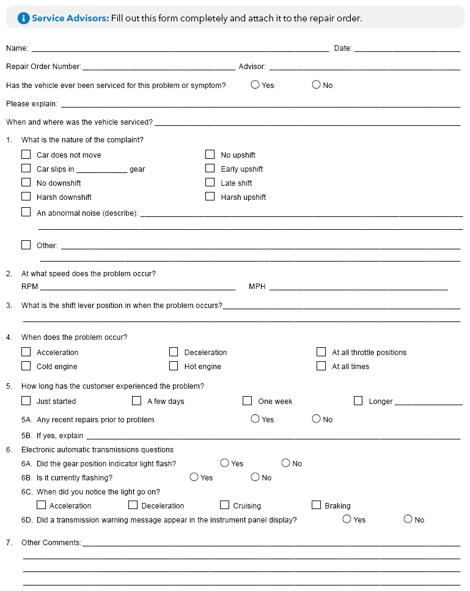

LEMON Manuals
: Even more car manuals for everyone: 1960-2025
Home
>>
Honda
>>
2016
>>
Civic LX, 4D Sedan, Automatic CVT Trans
>>
Repair and Diagnosis (Single Page)
>>
Quick Lookups
>>
Technical Bulletins
>>
Technical Service Bulletins
>>
Other Variant
>>
Procedures
>>
Automatic Transmission Questionnaire (AJA13317)
Automatic Transmission Questionnaire (AJA13317)
WARNING:
This page is about the Civic EX-L, 2D Coupe, which is a different variant/trim than selected.
Publication date: 2019-10-01
Reference number: AJA13317
AUTOMATIC TRANSMISSION QUESTIONNAIRE
AUTOMATIC TRANSMISSION QUESTIONNAIRE
TECHNICAL SERVICE BULLETIN
Reference Number(s): AJA13317, Date of Issue: October 01, 2019
HONDA:
All Models
SERVICE INFORMATION
